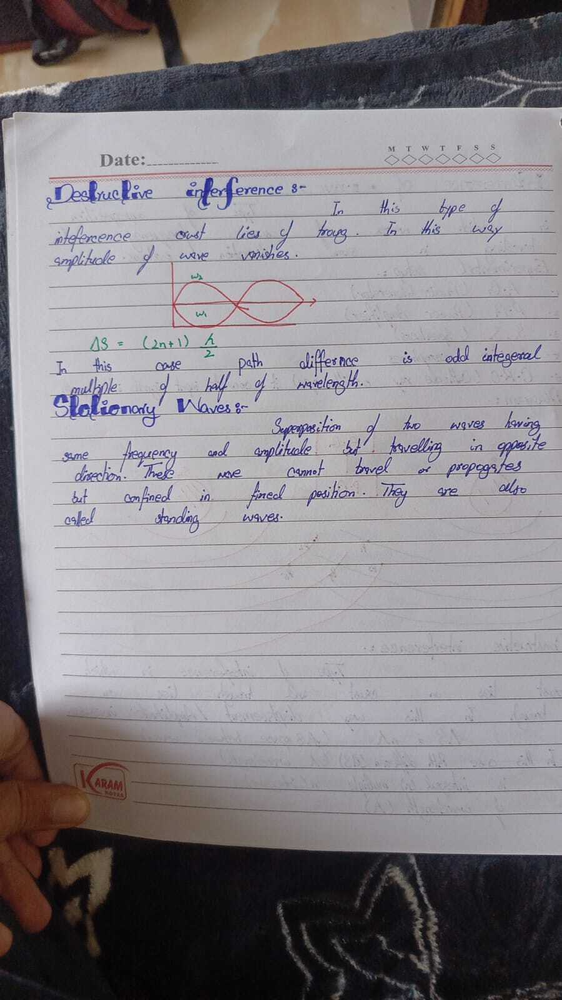

Destructive & Stationary Waves
Absent Day 3 · Path difference · Standing waves intro
Destructive interference :-
In this type of interference crest lies of troug. In this way
amplitude of wave vanishes.
ΔS = (2n+1) λ/2
In this case path difference is odd integeral multiple of half of
wavelength.
Board Check: n = 0, 1, 2…
→ ΔS = λ/2, 3λ/2, 5λ/2… → amplitude cancels (dark / quiet). Spelling
on board “troug / integeral” kept as written; mean trough / integral.
Stationary Waves :-
Superposition of two waves having same frequency and amplitude but
travelling in opposite direction. These wave cannot travel or
propagates but confined in fixed position. They are also called
standing waves.
Confined between boundaries · nodes stay fixed · energy doesn’t
propagate forward like a normal travelling wave.
Original Notebook Page

Add ch7_p8.jpg next to this file